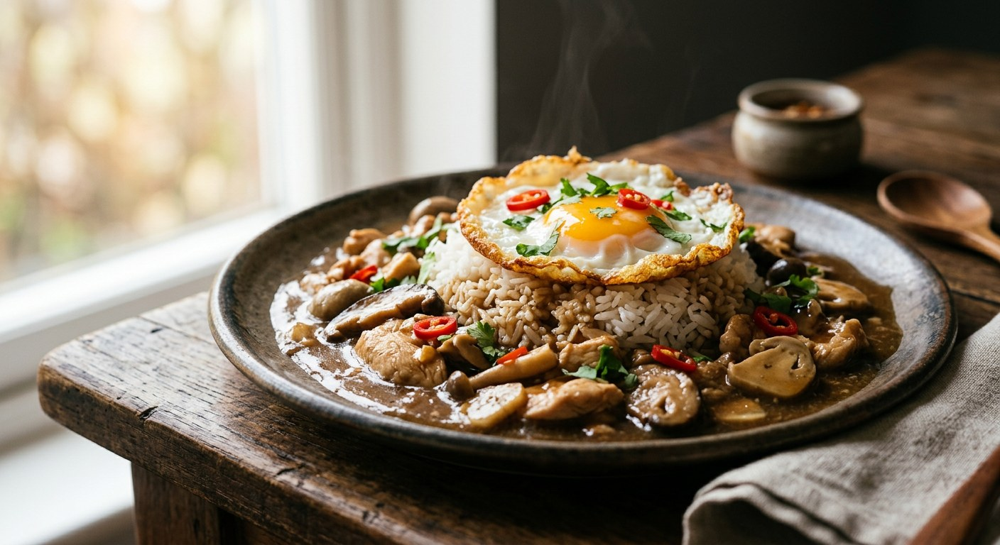

Soy-marinated chicken simmered in stock, finished with a glossy, translucent gravy — Bangkok's Chinatown classic that a hundred-year-old shop still ladles over rice every day.

The name splits neatly: ข้าว (khao) is rice, หน้า (na) is the topping, and ไก่ (gai) is chicken. One plate, one topping, one sauce — but the sauce is the whole point. It is not a Thai curry: there is no coconut milk, no curry paste. The gravy is a Chinese-style stock, seasoned with light soy, sweet dark soy and oyster sauce, and finished with a starch slurry until it turns clear, glossy and just thick enough to cling to the chicken.
The dish belongs to Bangkok's ห้าแยกพลับพลาไชย — the Phlapphla Chai five-way junction in Pom Prap district, the old Chinese quarter. Aroifin traces the first plate to the shop เลี่ยวเลี่ยงเซ้ง near Ratchawong pier, and the recipe that spread from there now carries the nickname ข้าวหน้าไก่ 100 ปี — the hundred-year-old khao na gai — at ร้านพูนเลิศ เหลาะงาทิ้น, still trading at the junction today. Maggi's editors remember the same dish as the one from ร้านสีฟ้า, the blue shop: a Hainanese formula, dark and glossy, served with Chinese sausage and a fried egg on the side.
Every source agrees on the finish. The gravy is thickened at the last minute, stirred fast so the starch never lumps, and cooked only until it goes transparent and glossy. Over the rice go sliced green spur chillies — พริกชี้ฟ้าเขียว — and coriander; the chillies are mild, and their job is to cut the richness of the sauce, not to burn.
| Thai | English | Amount |
|---|---|---|
| ไก่ | Chicken, sliced (thigh or breast) | 500 g |
| ซีอิ๊วขาว | Light soy sauce | 2 tbsp + 1 tbsp |
| ซีอิ๊วดำหวาน | Sweet dark soy sauce | 3 tbsp |
| พริกไทยป่น | Ground white pepper | 1 tsp |
| แป้งข้าวโพด | Cornflour (marinade + slurry) | 2 tbsp + 4 tbsp |
| น้ำมันงา | Sesame oil | 2 tbsp |
| น้ำมันพืช | Vegetable oil | 3 tbsp |
| น้ำสต๊อกไก่ | Chicken stock | 500 ml |
| ซอสปรุงรส | Seasoning sauce | 1 tbsp |
| น้ำตาลทราย | Granulated sugar | 2 tbsp |
| ซอสหอยนางรม | Oyster sauce | 2 tbsp |
| ข้าวสวย / พริกชี้ฟ้าเขียว / ผักชี | Steamed jasmine rice, green spur chillies, coriander | to serve |
The stall batch (Phol Food Mafia, ห้าแยก style): 600 g chicken giblets and 1.4 kg sliced breast for 1.6 litres of stock — the giblets are why his gravy simmers a full 25 minutes. The shop-style pot (Maggi, ราชวงศ์): 250 g cubed thigh with straw mushrooms, spring onion, coriander root and garlic, thickened with Hong Kong tapioca starch and a splash of Chinese cooking wine, served with kunchiang and a fried egg. The pantry pot (Pantip): thigh or breast marinated for an hour with garlic, pepper and coriander root, simmered in mushroom-soaking water and thickened with tapioca starch.
The cut of chicken. Aroifin and Maggi say thigh — the famous shops use it because it stays tender through the simmer. Phol's stall recipe (and Wongnai's) use breast, and Phol adds a full load of giblets, noting the original used thigh. The two schools make two gravies: thigh gives richer meat, breast and giblets give a lighter, cleaner plate.
The marinade. Wongnai and Phol rest the chicken 15 minutes; Pantip gives it an hour; Aroifin marinates 5–6 hours, or overnight. Everyone agrees on the same marinade — light soy, sweet dark soy, pepper and starch — and only argues about the clock.
The thickener. Phol and Wongnai use cornflour. Pantip uses tapioca starch, Maggi specifies Hong Kong tapioca starch (แป้งมันฮ่องกง), and Aroifin uses both. Cornflour gives the clearest gloss; tapioca sets firmer and stays glossy longer on a stall counter.
The extras. Maggi stirs in straw mushrooms, spring onion, coriander root and garlic; Pantip adds shiitake; Phol's version runs on giblets; Wongnai and Aroifin keep it to chicken alone. Chinese cooking wine appears in Maggi and in Pantip's "original formula" — Pantip's cook cheerfully admits she had only Thai whisky in the house and left it out.
The accompaniments. Green spur chillies and coriander are universal. Maggi alone adds kunchiang and a fried egg — the house style of the blue shop, not the stall standard.
This recipe is translated from the following Thai-language sources. Where they disagree, we've said so.
1. Phol Food Mafia — "Chicken gravy with rice (ข้าวหน้าไก่ห้าแยก)" by พล ตัณฑเสถียร (the stall batch with giblets; the recipe this page scales down) — pholfoodmafia.com
2. Aroifin — "วิธีทำข้าวหน้าไก่ สูตรโบราณ ซอสเข้ม อร่อยเหมือนต้นตำรับ" (the old-style thigh version and the history of the dish) — aroifin.com
3. Maggi Thailand — "เคล็ดลับทำข้าวหน้าไก่ พร้อมสูตรข้าวหน้าไก่ราชวงศ์" (the blue-shop style with straw mushrooms, Chinese wine and kunchiang) — maggi.co.th
4. Wongnai Cooking — "วิธีทำ 'ข้าวหน้าไก่ราชวงศ์' ไก่ฉ่ำเข้าเนื้อ ข้าวหอมนุ่มเต็มคำ!" by กิน&GO (the 25-minute simmer and foam-skim method) — wongnai.com
5. Pantip — "ข้าวหน้าไก่ทำเอง จานใหญ่ สะใจมากๆ" topic 36513520 (the home pot, mushroom water and tapioca starch) — pantip.com